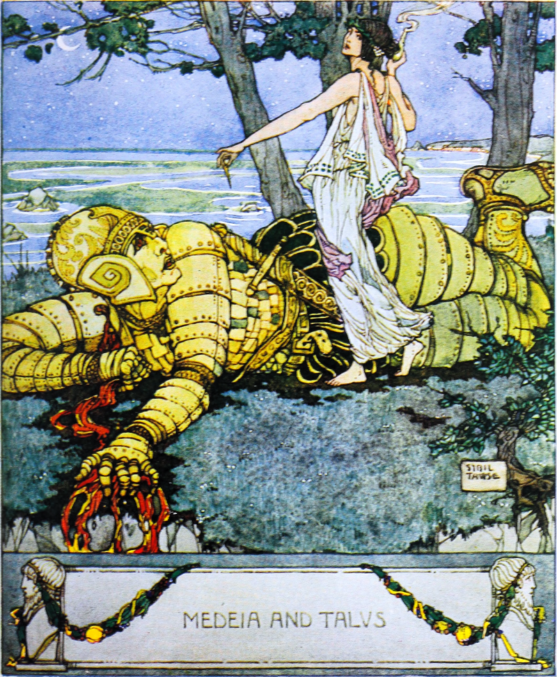

| Date |
Milestone |
| 1950 |
The Turing Test: Computer scientist Alan Turing proposes a
test for machine intelligence. If a machine can trick huumans
into thinking it is human, then it is human, then it has intelligence.
|
| 1964 |
Eliza: Pioneering chatbot developed by Joseph
Weizenbaum at MIT holds conversations with humans |
| 1967-1997 |
A.I. Winter: Many false starts and dead-ends leave
A.I. out in the cold |
| 1997 |
Deep Blue: Deep Blue, a chess-playing computer
from IBM defeats world chess champion Garry Kasparov. |
| 2011 |
SIRI: Apple integrates Siri, an intelligent virtual
assistant with voice interface, into the iPhone 4S. |
| 2017 |
AlphaGo: Google's A.I. AlphaGo beats world champion
Ke Jie in the complex board game of Go, notable for its vast
number of possible positions. |
